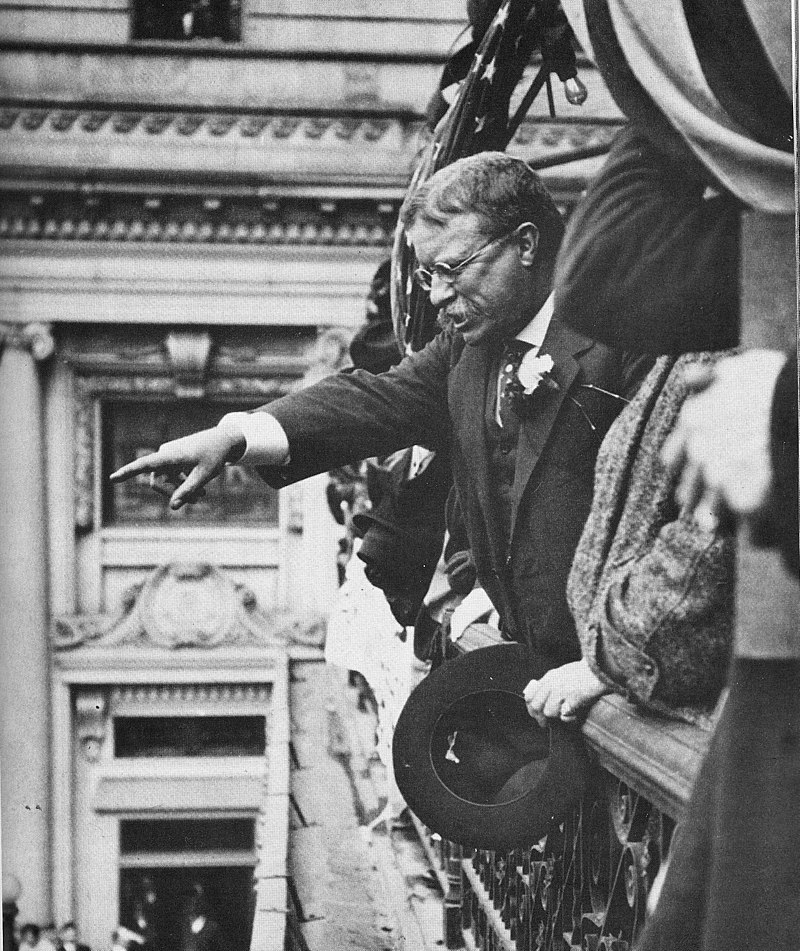
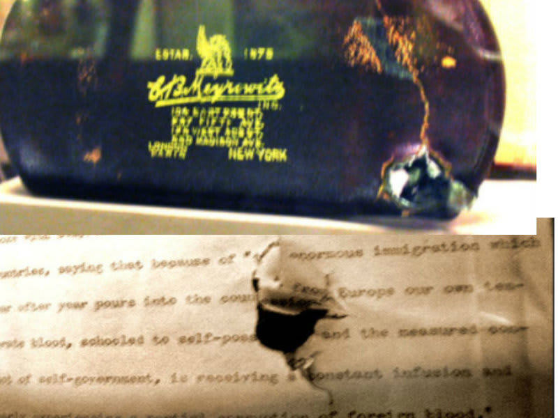
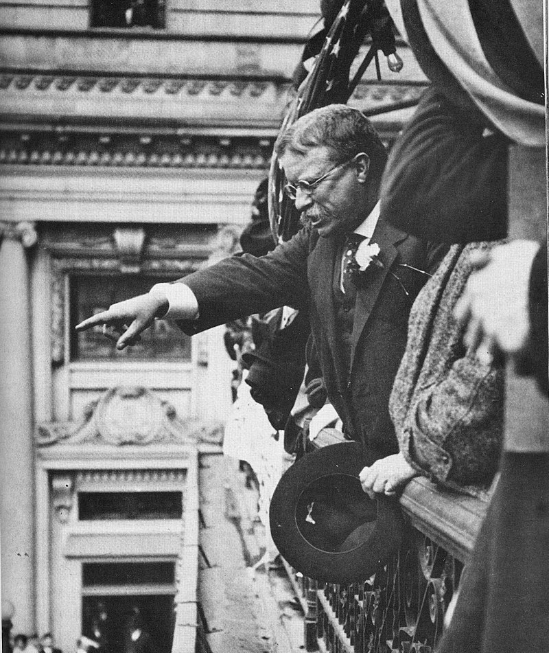
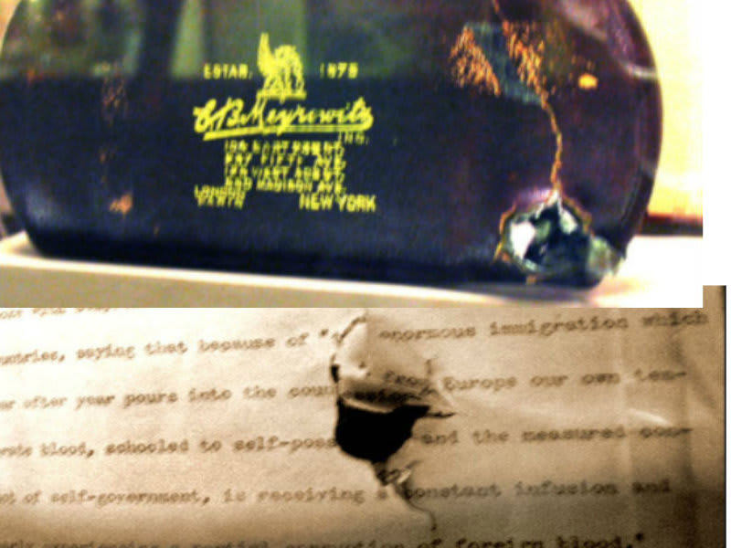
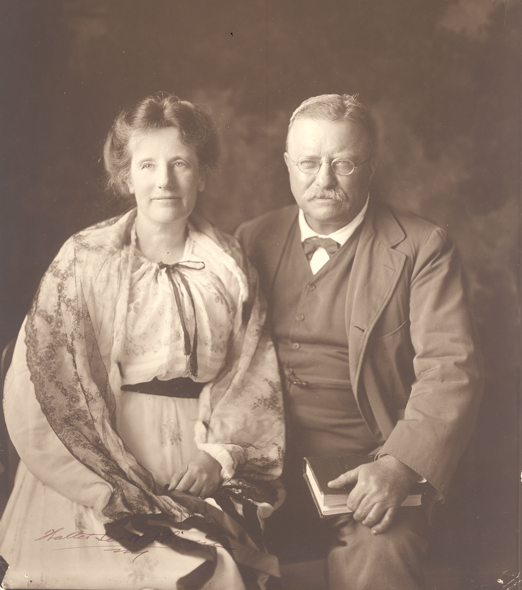
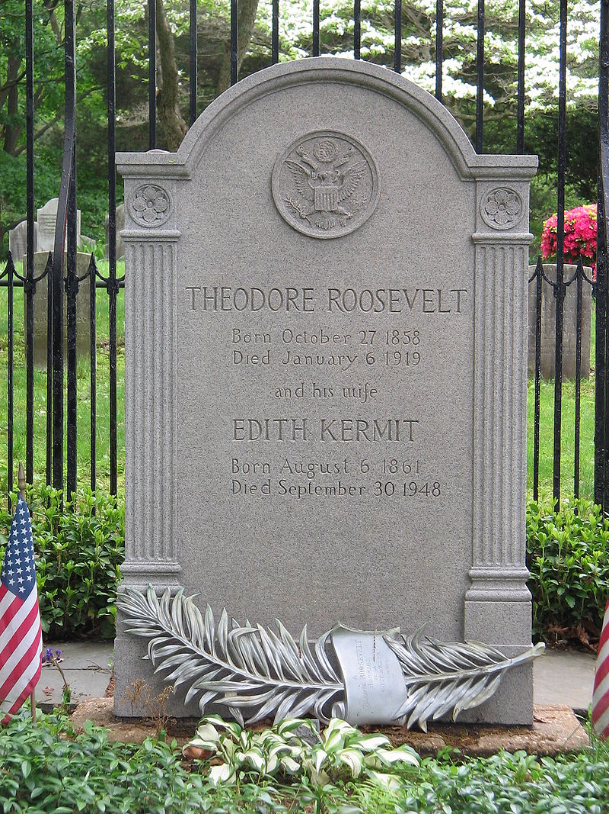

Displeased with how his successor, Taft, was running the country, Roosevelt decided to run for a third term in the 1912 election.
The Republican Party would not nominate Roosevelt, so he created his own party called the Progressive Party also known as the "Bull Moose Party"
While on his way to a speech in Milwaukee, a man shot Roosevelt in the chest with a revolver. The bullet was slowed down by his folded speech and eyeglass case and stopped just next to his lungs.
Roosevelt then gave a 90 minute speech while bleeding on stage, saying "It takes more than that to kill a Bull Moose."
Despite the Bull Moose Party winning more votes than the Republicans, the split in the vote allowed Woodrow Wilson to easily win the election.
When the First World War broke out in 1914, the 59 year old Roosevelt offerred to reform the Rough Rider volunteers and lead them into battle. However this was denied by President Wilson.
Roosevelt was seriously considered for the 1920 election but his health had deteriorated from the long-term tropical diseases he acquired in his River of Doubt expedition.
Theodore Roosevelt passed away on January 5, 1919. The sitting Vice-President said that, "Death had to take Roosevelt sleeping, for if he had been awake, there would have been a fight."
 